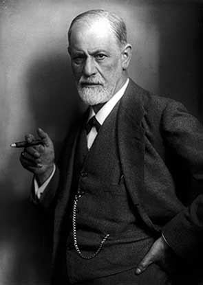
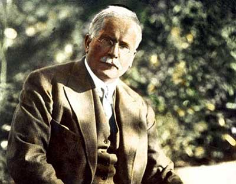

Зигмунд Фрейд
Зигмунд Фрейд был тем самым первооткрывателем и основателем науки, необходимость в которой была продиктована самим временем. Сам факт, что работа всей его жизни - изучение психической составляющей человека, - свидетельство того, что в его время появилась нужда в такой работе; своего рода симптом глубокой болезни западного общества. Эта нелепая конструкция, эго, настолько разрослась в Европе к концу 19 века, что начала вызывать проблемы у многих людей: неврозы, истерики, обсессионные состояния, паранойи, и другие явления, ни для одного из которых не существовало даже и названия. Мы обязаны доктору Фрейду хотя бы тем, что он положил начало научной классификации психических расстройств. Фрейд внедрил понятие психоанализ - метод, с помощью которого (анализируя сны, а также прибегая к сначала гипнозу, а потом к "методу свободных ассоциаций - т.е. позволяя пациентам говорить на любые темы без утайки и контроля мыслей,) врач может диагностировать состояние пациента. Фрейд остро поставил вопросы различия сознания и подсознания, наметил пути и периоды становления психики человека, разделил эту самую психику на три отдела (знаменитые "Я", "Оно" и "Сверх-Я"), а также проявил огромное значение бессознательной стороны человеческой сущности. Фрейд в своих работах рассматривает такие интересные проявления истинных подсознательных желаний, как оговорки (знаменитая фраза "Оговорочка "по Фрейду"") и суеверия, на опыте лечения своих же пациентов строит и доказывает теории. Мне было очень любопытно во время чтения проводить параллели между моими же подавленными желаниями и, например, разбитием стакана или оговоркой. Пока не обратишь на такие вещи внимание, кажется, что это происходит "случайно" :D
В сущности, Зигмунд вступил на нетронутый лёд: он дал импульс науке, главным предметом которой стал человек не в биологическом, физиологическом или историческом значении, а в смысле всего того, что мы собой представляем: невероятный коктейль из эмоций, мыслей, чувств, желаний, страхов, веры, суеверия, а также всего того тёмного и зверино-древнего, что также есть в нас даже в большей мере, но о чём мы редко подозреваем.
Его учение о сексуальной энергии (либидо) как о двигателе всех наших желаний, да и в целом - наших жизней, служило предметом острой критики на протяжении более чем ста лет. Тем не менее, мы живём в мире, густо населённом людьми, и контактируем с ними всю жизнь. Да что уж там, зачастую люди и составляют всю нашу жизнь. Понимать их - значит понимать себя, и наоборот. Неважно с какого конца тут браться, - совет мой будет один: с идеями Зигмунда стоит ознакомиться. Я начал с книги "Анализ фобии пятилетнего мальчика". Можно продолжить одной из его ключевых работ: "Толкование сновидений".
Карл Юнг
Любимый ученик, последователь, а затем - оппонент Фрейда, швейцарец Карл Густав Юнг в формате ссылок, упоминаний и советов встречался мне уже несколько раз за последние полгода. Обычно, это явный признак того, что пришло время начать читать того или иного автора. Так и сейчас, начало только-только было положено, но я уже подозреваю плодотворность этой связи. По мере понимания, добавлю сюда материал. Читаю "Психология и Алхимия".